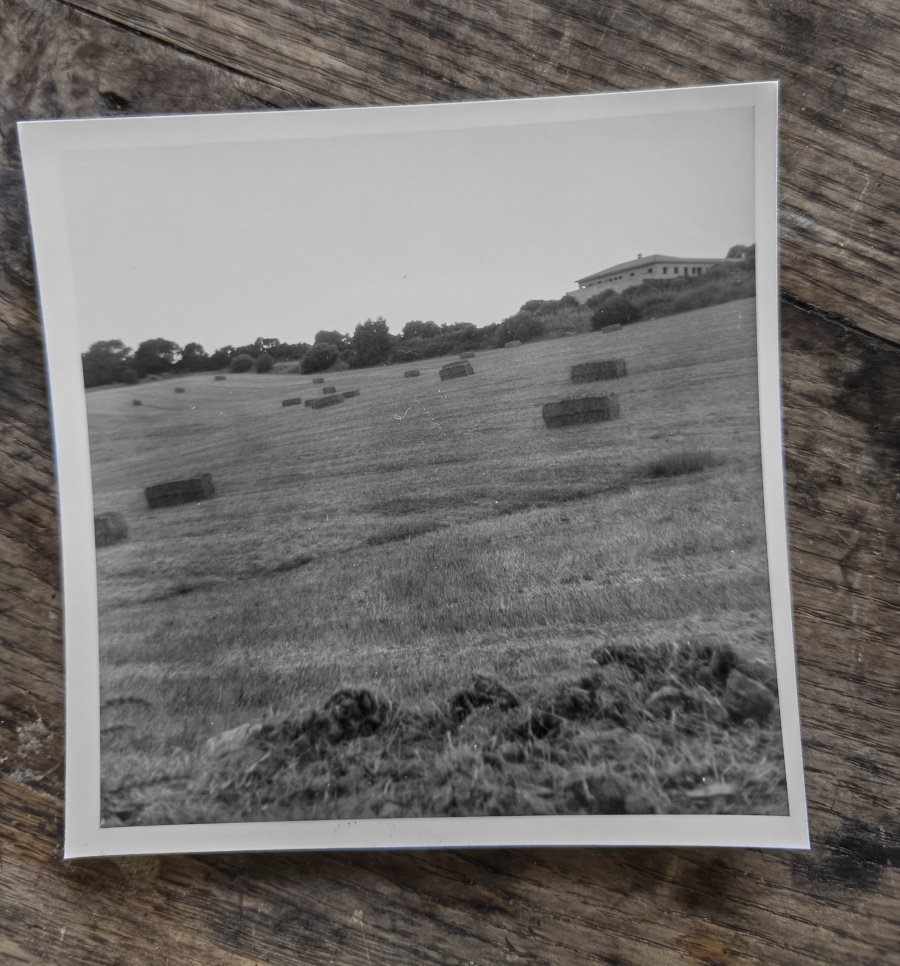
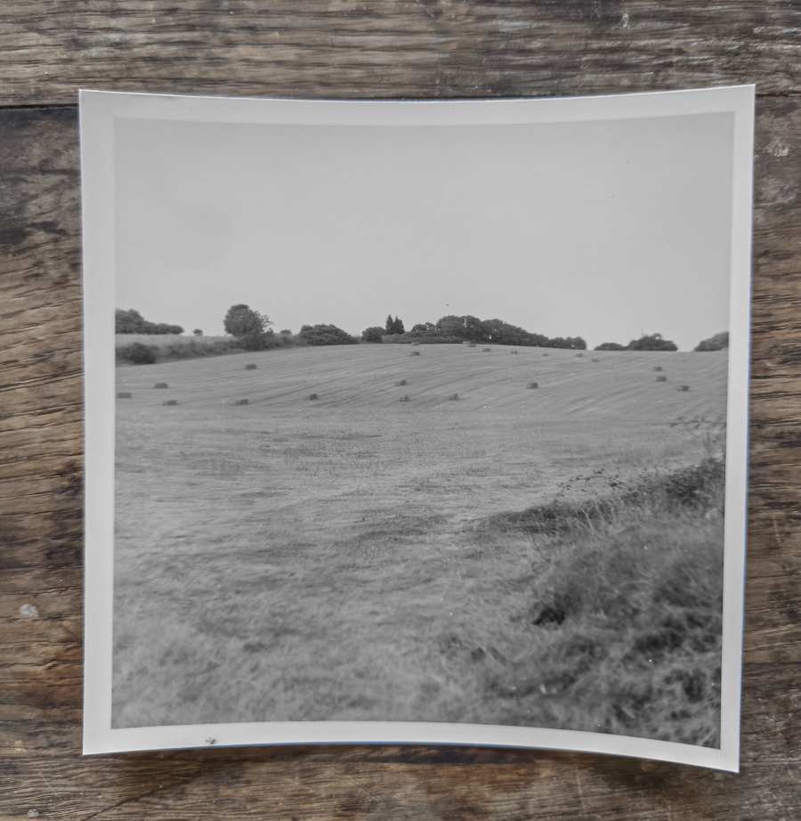

John was tossing in bed for an hour before picking himself up. He went over to the kitchen, floorboards creaking; the direction of the wood grain helped him navigate in the dark, feeling for the light switch, a match to light the gas ring, filling the kettle; when was it that the order changed? some years ago now. He used to fill the water first, place the kettle, then strike the match. The thought he woke up with came back to him, a line of everyone that ever loved him and those he loved, one after the other "I love you, John", "I love you", "love you", "oh.. I love you, John"... The kettle whistled.
Leaning on the counter waiting for the dripping coffee, he recalled and episode of The Time Tunnel, in which there was a time warp for everyone but the protagonist meaning he could walk around while the rest of the crew were frozen. An attractive state: right up there with invisibility, flight, and time travel. It was a kind of a time travel: time traveled at a different speed for Doug, yes it was Doug! Doug and Tony! The kitchen before dawn, while the house is asleep bares a comic resemblance to the scene in the TV series. What rules apply in that carved-out / stolen / found time?
He watched the surface of the brewing coffee in the cone, draining slowly, some bigger grains were starting to surface like rocks in a rock pool, the draining speeding up, revealing the floor of the pool, glittering brown and gold. He felt a longing for the sea.

Her voice in bed before falling asleep, some conversations take a night and a day, "I imagine a greater you, John.". In the emptiness now he kept hearing "why?" but she didn't ask why. He picked up the cup and sat at the table, lost in thought, he let the coffee go cold. Small John examined the dirty plates on the counter by the sink, Marie's late snack left for him to clear. Big John savoured the pleasure of watching her eat, the rare permission he has to behold her beauty openly; big and small, an infinite game of Russian dolls. He picked up a pair of slippers and carried them to the stand by the door, feeling equally used and useful, generous with the bonus time that he found.
When she will wake up the pettiness will seep; he will feel cheated, then fail, say the wrong thing. She will be taken aback, then she will take stock, find the drawer she is carrying around like an oversized pocket in her apron, the one labeled “little John”, and read the note she wrote to herself for this occasion. They will have a coffee together then. acknowledgement grew to a space that is greater and smaller than words.
